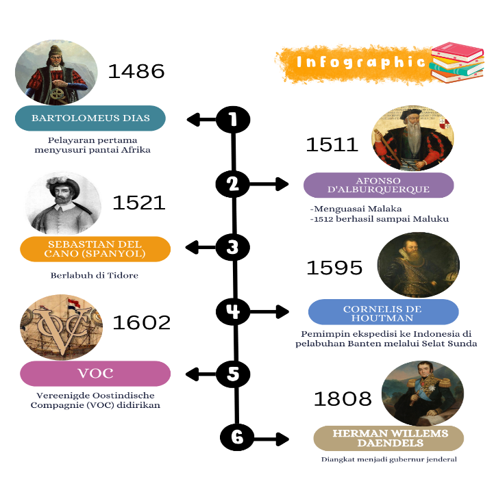
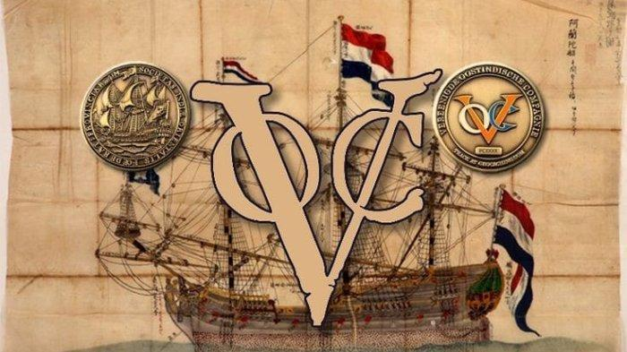
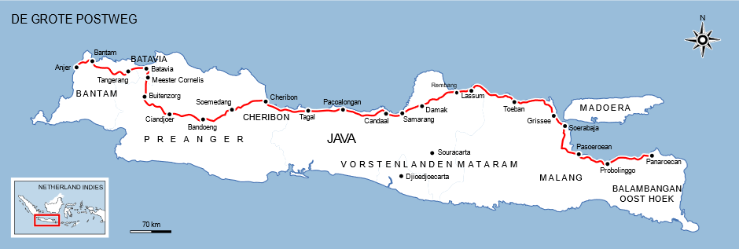
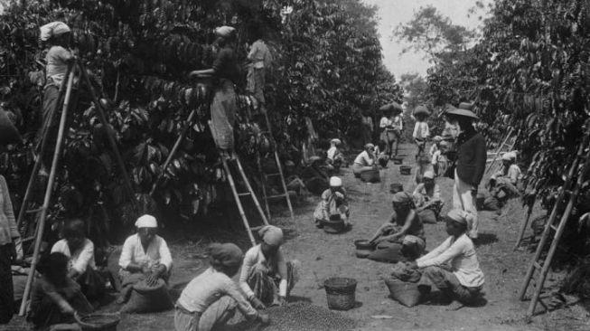
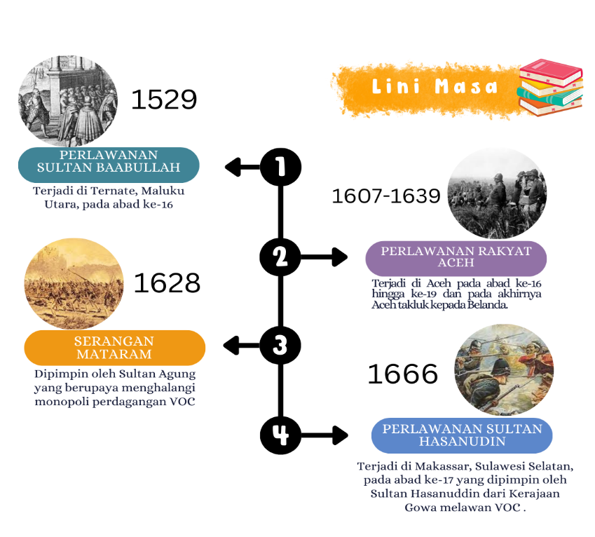
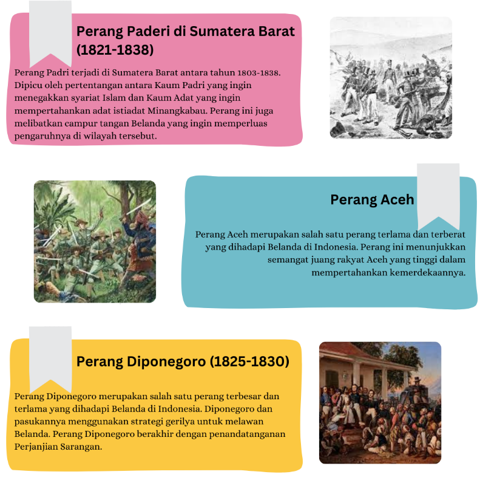
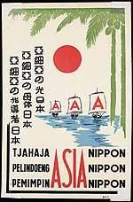
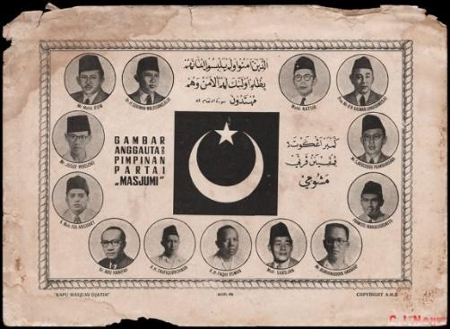
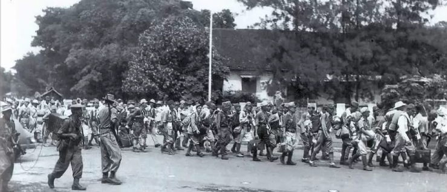
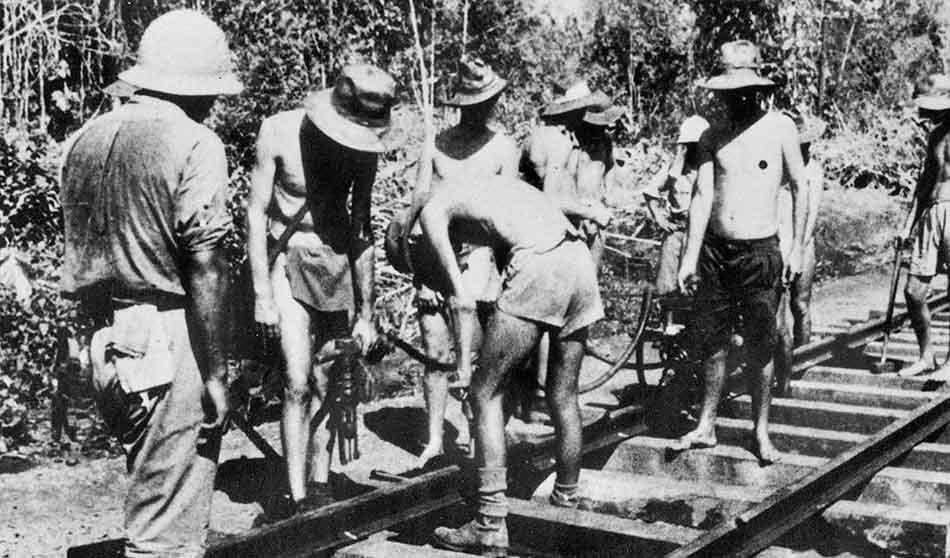

Kehidupan Masyarakat Indonesia Pada Masa Kolonialisme Dan Imperialisme
Kedatangan Bangsa Barat Di Indonesia
Berikut adalah proses masuknya bangsa barat ke Indonesia!

Gambar 2.1 Infografis Kedatangan Bangsa
Barat
Pada tahun 1486, Bartolomeus Dias dari Portugis menemukan jalur baru ke Asia melalui
ujung selatan Afrika. Selanjutnya, pada 1511, Afonso d'Albuquerque menaklukkan
Malaka dan mencapai Maluku, mengukuhkan dominasi Portugis atas perdagangan rempah.
Pada 1521, Sebastian del Cano, pelaut Spanyol, tiba di Tidore, memperluas pengaruh
Spanyol. Pada tahun 1595, Cornelis de Houtman memimpin ekspedisi Belanda pertama ke
Indonesia, menandai awal kehadiran Belanda di Nusantara. Tahun 1602, Belanda
mendirikan VOC untuk memonopoli perdagangan di Asia dan menguasai wilayah Nusantara.
Pada 1808, Herman Willem Daendels diangkat sebagai gubernur jenderal di Hindia
Belanda, memperkuat kekuasaan Belanda dengan proyek infrastruktur besar seperti
pemangunan jalan Anyer-Panarukan.
Masa kolonialisme berkaitan dengan munculnya Kongsi dagang VOC di Indonesia.
Pengaruh ekonomi VOC semakin kuat dengan dimilikinya hak monopoli perdagangan. Masa
inilah yang menjadi sandaran perluasan kekuasaan Belanda pada perjalanan Sejarah
selanjutnya.
Kongsi Dagang

Kongsi dagang Belanda yang dikenal sebagai Vereenigde Oostindische Compagnie
(VOC) didirikan di Amsterdam. Tujuan pembentukan VOC adalah untuk
menghindari
persaingan yang tidak sehat antara kelompok pedagang Belanda yang sudah ada,
serta untuk memperkuat posisi Belanda dalam menghadapi persaingan dengan
pedagang dari negara lain (Djoened et al., 2019).
Pengaruh Monopoli Perdagangan
Pada awal kedatangannya, bangsa-bangsa Barat diterima dengan baik oleh
rakyat Indonesia. Namun, seiring berjalannya waktu, Belanda mulai menerapkan
monopoli yang merupakan penguasaan pasar oleh satu atau sedikit perusahaan.
Monopoli adalah penguasaan pasar yang dilakukan oleh satu atau sedikit
Perusahaan (Tresnaningsih et al., 2017).
Belanda juga memaksa kerajaan-kerajaan di Indonesia untuk menandatangani
kontrak monopoli dengan berbagai cara, termasuk politik adu domba atau
divide et impera, di mana mereka mengadu domba kerajaan atau pejabat
kerajaan satu dengan yang lain. Hal ini memperkeruh hubungan antarkerajaan
di Indonesia. Akibatnya adalah rakyat Indonesia sangat menderita karena
tidak memiliki kebebasan menjual hasil bumi mereka dan terpaksa menjualnya
hanya kepada VOC.
Pengaruh Kebijakan Kerja Paksa
Kerja paksa atau rodi adalah sistem yang memaksa rakyat untuk bekerja tanpa
upah atau dengan upah yang sangat rendah (Rinardi, 2017). Biasanya, sistem
ini diberlakukan oleh penguasa kolonial dalam proyek-proyek besar seperti
pembangunan infrastruktur.

Gambar 2.3 Jalan Raya Pos Yang
Dibangun Pada Masa Herman Willem Daendels
Jalur Anyer-Panarukan adalah hasil dari kerja paksa pada masa pemerintahan
Daendels. Jalur ini membentang sepanjang lebih dari 1.000 kilometer dari
Cilegon (Banten) hingga Panarukan (Jawa Timur), melalui beberapa kota
penting di Pulau Jawa. Pembangunan sekitar 200 tahun yang lalu oleh
pemerintah Gubernur Jenderal Daendels dari Republik Bataaf (Prancis). Jalan
ini merupakan bagian dari kebijakan pembangunan militer, jalan raya,
perbaikan pemerintahan, dan ekonomi yang dilaksanakan oleh Daendels selama
masa jabatannya (1808-1811).
Pengaruh Sistem Tanam Paksa

Gambar 2.3 Jalan Raya Pos Yang
Dibangun Pada Masa Herman Willem Daendels
Pada awal abad ke-20, Belanda mengalami perang di Eropa, menyebabkan
kerugian keuangan besar. Untuk mengatasi hal ini, Belanda meningkatkan
ekspor. Sebelumnya, pada tahun 1830, Van Den Bosch menerapkan Sistem Tanam
Paksa (Cultuur Stelsel) karena kesulitan keuangan akibat Perang Jawa (perang
diponegoro) dan Perang Belgia (Djoened et al., 2019). Namun, pelaksanaan
Tanam Paksa penuh dengan penyelewengan, menyebabkan penderitaan rakyat
Indonesia, termasuk kematian akibat kelaparan dan penyakit.
Pada tahun 1870, terjadi kecaman atas kebijakan ini, dan beberapa orang
Belanda seperti Baron van Hoevel, Multatuli, dan L. Vitalis menentangnya.
Pada tahun yang sama, dikeluarkan Undang-Undang Agraria yang mengatur
tentang politik tanah di wilayah jajahan, memperbolehkan swasta menyewa
tanah pemerintah atau penduduk. Selain itu, monopoli dagang pada masa
kolonialisme juga merugikan masyarakat, menyebabkan perlawanan terhadap
Persekutuan Dagang.
Perlawanan Terhadap Persekutuan Dagang
Monopoli dagang pada masa kolonialisme sangat merugikan masyarakat Indonesia. Adanya
kongsi dagang membuat masyarakat harus mengalami kerugian karena hasil bumi hanya
dapat dijual pada kongsi dagang dengan harga di bawah pasaran. Berikut adalah lini
masa yang menunjukkan kronologi perlawanan rakyat Indonesia terhadap persekutuan
dagang pada masa kolonialisme.

Gambar 2.5 kronologi perlawanan rakyat
Indonesia
Perlawanan Terhadap Pemerintahan Hindia Belanda
Abad ke-19 merupakan puncak perlawanan rakyat Indonesia di berbagai daerah menentang
Pemerintah Hindia Belanda. Kegigihan perlawanan rakyat Indonesia menyebabkan Belanda
mengalami krisis keuangan untuk membiayai perang (Mahmudah, 2018). Namun, perlawanan
di berbagai daerah tersebut belum berhasil membuahkan kemerdekaan. Bagaimana proses
perlawanan rakyat Indonesia pada abad ke-19? Mari kita jelajahi bersama.

Gambar 2.5 Perlawanan Terhadap Hindia
Belanda
Masa Pendudukan Jepang
Pada akhir tahun1930 hingga awal 1940, Belanda sebagai penguasa kolonial di
Indonesia menghadapi tekanan yang semakin berat. Pecahnya Perang Dunia II pada 1939
membawa dampak buruk bagi Belanda. Pada Mei 1940, Jerman berhasil menginvasi dan
menduduki Belanda, sehingga pemerintahan Belanda terpaksa mengungsi ke London,
Inggris. Kondisi ini melemahkan posisi Belanda sebagai negara kolonial di Indonesia.
Di sisi lain, gerakan nasionalis semakin tumbuh kuat dengan dukungan dari berbagai
organisasi dan tokoh seperti Soekarno dan Hatta.
Pada saat yang sama, Jepang juga mulai memperluas pengaruhnya di Asia, terutama
untuk mencari sumber daya alam yang dibutuhkan oleh industrinya. Setelah memulai
invasi ke Manchuria (wilayah kuno di sebelah timur laut Tiongkok) pada 1931 dan
memperluas kekuasaan di Asia Timur, Jepang mulai melirik wilayah Asia Tenggara yang
kaya akan minyak dan sumber daya alam lainnya, termasuk Indonesia. Jepang memulai
invasinya ke Asia Tenggara pada 1941, dan setelah serangan mendadak terhadap Pearl
Harbor pada 7 Desember 1941, Jepang dengan cepat bergerak menguasai wilayah Pasifik.
Kekuatan Belanda yang sudah lemah tidak mampu memberikan perlawanan maksimal di
Indonesia.
Pada awal 1942, pasukan Jepang mulai masuk ke wilayah Indonesia. Dalam waktu
singkat, mereka berhasil menguasai wilayah strategis seperti Kalimantan, Sumatra,
dan Jawa. Pertempuran besar terakhir antara Sekutu (termasuk Belanda) melawan Jepang
terjadi di Laut Jawa pada akhir Februari 1942, dikenal sebagai Pertempuran Laut
Jawa, yang berakhir dengan kekalahan besar bagi Sekutu. Jepang akhirnya berhasil
menguasai seluruh Jawa pada Maret 1942. Pada 8 Maret 1942, Jenderal Hein ter
Poorten, Panglima Tentara Kerajaan Hindia Belanda (KNIL), menyerah tanpa syarat
kepada Jepang di Kalijati, Subang, Jawa Barat. Penyerahan ini menandai berakhirnya
kekuasaan Belanda di Indonesia secara efektif dan dimulainya pendudukan Jepang di
Indonesia (Setialaksana, 2017).
Jepang melakukan propaganda dengan menyebarkan semboyan "Tiga A" (Jepang Pemimpin
Asia, Pelindung Asia, Cahaya Asia) untuk mendapatkan simpati rakyat Indonesia.
Selain itu, Jepang menjanjikan kemudahan bagi bangsa Indonesia dalam melakukan
ibadah, mengibarkan bendera merah putih yang berdampingan dengan bendera Jepang,
menggunakan bahasa Indonesia, dan menyanyikan lagu kebangsaan “Indonesia Raya”
bersama lagu kebangsaan Jepang “Kimigayo”. Jepang melakukan beberapa kebijakan
antara lain sebagai berikut:
Membentuk Organisasi Sosial

Organisasi sosial yang dibentuk oleh Jepang selama pendudukan mereka di
Indonesia antara lain Gerakan 3A, Pusat Tenaga Rakyat (Putera), Jawa
Hokokai, dan Masyumi. Gerakan 3A dipimpin oleh Mr. Syamsuddin, dengan
tujuan
untuk mendapatkan simpati dari penduduk dan tokoh masyarakat di
sekitarnya
(Tresnaningsih et al., 2017).
Sebagai pengganti Gerakan 3A, Jepang mendirikan gerakan Pusat Tenaga Rakyat
(Putera) pada tanggal 1 Maret 1943. Gerakan ini dipimpin oleh tokoh-tokoh
nasional yang dikenal sebagai Empat Serangkai, yaitu Soekarno, Mohammad
Hatta, K.H. Mas Mansyur, dan Ki Hajar Dewantara. Putera cukup diminati oleh
kalangan tokoh pergerakan Indonesia dan digunakan untuk konsolidasi dengan
tokoh-tokoh perjuangan.

Pada tahun 1944, dibentuk Jawa Hokokai (Gerakan Kebaktian Jawa), yang
berdiri di bawah pengawasan pejabat Jepang. Tujuan utamanya adalah
menggalang dukungan untuk rela berkorban demi pemerintah Jepang. Jepang juga
membubarkan Majelis Islam A’la Indonesia pada tahun 1943 dan menggantikannya
dengan Masyumi (Majelis Syuro Muslimin Indonesia). Masyumi dipimpin oleh
K.H. Hasyim Ashari dan K.H. Mas Mansyur.
Membentuk Organisasi Militer

Gambar 2.8 Pembentukan
Organisasi Militer Oleh Jepang
Jepang menyadari pentingnya mengerahkan rakyat Indonesia untuk membantu
perang menghadapi Sekutu. Oleh karena itu, Jepang membentuk berbagai
organisasi semimiliter. Berikut ini merupakan organisasi yang dibentuk
Jepang untuk melangsungkan pemerintahannya di Indonesia.
Seinendan
Pemuda prajurit perang usia 14-22 tahun
Fujinkai
Himpunan kaum wanita di atas 15 tahun untuk terikat dalam
latihan semimiliter
Keibodan
Barisan pembantu polisi laki-laki berumur 20-25 tahun
Heiho (1943)
Organisasi prajurit pembantu tentara Jepang
Peta
Pasukan gerilya yang membantu Jepang melawan serangan musuh
tiba-tiba
Romusha
Romusha adalah istilah yang merujuk kepada pekerja paksa yang diambil oleh
pemerintah Jepang selama pendudukan mereka di Asia Tenggara selama Perang
Dunia II, termasuk di Indonesia. Istilah "romusha" sendiri berasal dari
gabungan kata dalam bahasa Jepang, yaitu "rodo" yang berarti "tenaga kerja"
dan "musha" yang berarti "impera" atau "pekerja."

Gambar 2.9 Kerja
Paksa
Jepang melakukan rekruitmen anggota romusha dengan tujuan mencari bantuan
tenaga yang lebih besar untuk membantu perang dan melancarkan aktivitas
Jepang. Romusha dikerahkan untuk membangun jalan, kubu pertahanan, rel
kereta api, jembatan, dan sebagainya (M. Nursa’ban, 2021). Selain itu, yang
sangat menyengsarakan dari pendudukan Jepang adalah pemaksaan wanita menjadi
Jugun Ianfu atau wanita penghibur Jepang di berbagai pos medan pertempuran.
Eksploitasi Kekayaan Alam
Jepang mengambil alih seluruh aset ekonomi Belanda dan mengawasi secara
langsung seluruh usahanya. Usaha perkebunan dan industri harus mendukung
keperluan perang, seperti tanaman jarak untuk minyak pelumas. Rakyat wajib
menyerahkan bahan pangan besar-besaran kepada Jepang. Jepang memanfaatkan
Jawa Hokokai dan intansi-instansi pemerintah lainnya. Pada masa panen,
rakyat wajib melakukan setor padi sedemikian rupa sehingga mereka hanya
membawa pulang sekitar 20% dari panen yang dilakukannya (Mukminan et al.,
2017). Kondisi ini mengakibatkan musibah kelaparan dan penyakit busung lapar
di Indonesia.